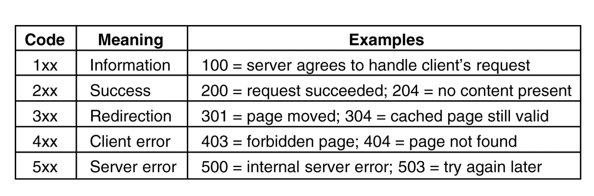
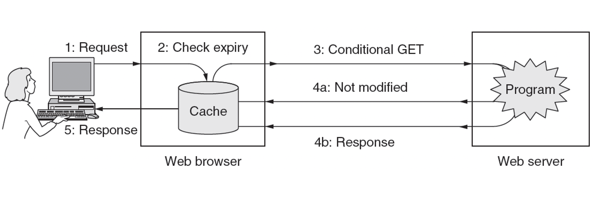

计算机网络6 应用层
计算机网络6：应用层
Chapter6：Application Layer
6.1 域名系统DNS
- 域名系统(Domain Name System)用于将主机名字转换成IP地址
- DNS是一个分布式的域名系统，是一个联机的分布式数据库系统，并采用C/S模式，大多数域名在本地解析而少量解析需要互联网上的通信
- 域名到IP地址的解析是由分布在互联网上的许多域名服务程序共同完成的，域名服务器在专门设置的节点上运行
- 解析的时候需要把需要解析的域名放在DNS请求报文中，以UDP用户数据报的方式发送给本地域名服务器，本地域名服务器把对应的IP地址放在回答报文中返回，如果没找到就需要向别的域名服务器发出请求
- 域名：层次树状结构
- 从左到右域名级别逐渐提高，并且用小数点隔开，域名都由英文字母和数字组成，除了-以外不能使用其他标点符号
- 顶级域名：国家顶级域名如cn，通用顶级域名如com，基础结构域名，只有一个arpa
- 域名服务器
- 采用分区的方法解决这个问题，一个服务器所管辖的范围叫做区，一个区中的所有节点都是可以联通的，每一个区设置相应的权限域名服务器，用来保存该区中所有主机的域名，区是域的子集
- 根域名服务器：最高层次、最重要的域名服务器，本地域名服务器无法解析的时候会首先请求根域名服务器，采用了任播技术
- 顶级域名服务器：负责管理所有该顶级域名下的二级域名
- 权限域名服务器：负责管理一个区的域名服务器
- 本地域名服务器，也叫默认域名服务器和
- 为了提高安全性，可以设置一个主域名服务器和若干个辅助域名服务器
- 域名解析的查询
- 主机向本地域名服务器的查询一般都是递归查询，即如果查不到，就由本地域名服务器向根域名服务器发送查询请求而不是让主机自己进行下一步的查询
- 本地域名服务器向根域名服务器的查询是迭代查询，即由本地域名服务器一个个查过去，当然也可以是递归查询
- 为了提高查询效率，域名服务器中广泛使用了高速缓存
6.2 电子邮件相关协议
- 两个最重要的标准：简单邮件传送协议SMTP和互联网文本报文格式
- 一个电子邮件系统最重要的三个组成构件
- 用户代理：一般就是一个电子邮件客户端软件，至少需要有撰写、显示、处理、通信等功能
- 邮件服务器：必须要同时可以充当客户机和服务器
- 邮件发送协议SMTP和邮件读取协议POP3，都是使用TCP连接来传送邮件
- 邮件发送的过程：
- 用户代理用SMTP向发送方邮件服务器的SMTP服务器建立TCP连接发送
- 发送方邮件服务器的SMTP客户向接受方的邮件服务器建立TCP连接，并发送给SMTP服务器
- 接收方的POP3服务器读取邮件向收件人的用户代理POP3客户发送邮件的内容
- 邮局协议POP3
- 非常简单但是功能有限的邮件读取协议，使用客户服务器的工作方式
- 需要用户输入鉴别信息之后才允许对邮箱进行读取
- 只要用户从POP3服务器中读取了邮件，POP3服务器就把该邮件删除
- 网际报文存取协议IMAP
- 比POP3复杂的多，也使用客户服务器的方式工作
- 是一个联机协议，用户计算机上运行IMAP的客户程序，然后和接收方的邮件服务器上的IMAP服务器程序建立TCP连接，因此就可以在自己的电脑本地操纵邮件服务器的邮件
-
最大的好处是用户可以在不同的地方使用不同的计算机随时读取邮件
-
通用互联网邮件扩充MIME
- SMTP只能传输ASCII编码的文本文件，而不能传送可执行文件或者二进制对象，限于传送7位的ASCII码和并且会拒绝超过一定长度的邮件
- MIME没有取代或者改动SMTP，而是继续使用原来的邮件格式，但是增加了邮件主体的结构
- 这个应该了解一下就好，不然太离谱了
6.3 万维网 World Wide Web
- 万维网
- 是一个大规模的、联机式的信息储藏所，使用链接的方法能非常方便访问互联网上的站点
- 万维网是一个分布式的超媒体系统，是超文本系统的扩充
- 万维网以客户服务器的方式进行工作，客户程序向服务器程序发出请求，服务器程序发送回所要的万维网文档
-
运用统一资源定位符URL和超文本传输协议HTTP来标志、发送各类文档
-
统一资源定位符URL
- 表示从互联网中得到的资源位置和访问这些资源的方法
- 基本的格式是：
协议://主机:端口/路径不区分大小写 -
使用HTTP协议的URL就是
http://主机:端口/路径 -
HTTP协议
- HTTP协议定义了浏览器怎么想万维网服务器请求万维网文档，以及服务器如何把文档传送给服务器
- HTTP是面向事务的，可以传输文本、超文本、声音、图像等格式的信息
- 使用TCP作为运输层的协议，需要在建立TCP连接之后再进行发送，保证了传输的可靠
- 每次交互有一个ASCII编码的串进行交互，即类MIME格式
- HTTP协议是无状态的，即多次访问同一个服务器上的同一个页面，服务器的响应是相同的
- 持续连接特性
- HTTP/1.1的持续连接有两种工作方式，即流水线式的和非流水线式的
- 流水线式的，客户收到HTTP响应报文之前就能接着发送新的请求，可以连续发送HTTP响应，客户访问所有的对象只需花一个RTT时间，流水线的工作方式使得TCP连接中的空闲时间减少
- HTTP的状态码

- HTTP的cache，也叫代理服务器，是一种网络实体，将最近的一些请求和响应放在本地磁盘中，如果发现这个请求和暂时存放的请求相同，就返回已经存储的响应而不需要按照URL再次访问该资源

- HTTP报文请求
- HTTP的报文分为两类，请求报文和响应报文
- HTTP是面向文本的，因此在报文中的每个字段都是ASCII码串，因此各个字段的长度是不确定的，每个报文有三个部分组成：
- 开始行：用于区分是请求报文还是响应报文，请求报文中叫做请求行，响应报文中叫做状态行，以回车换行结尾
- 请求行有方法、URL和HTTP协议的版本，方法就是GET、POST等等
- 响应报文中的状态行有版本、状态码和短语
- 首部行：可以有若干行，传输一些信息，用字段名+空格+value+回车换行的形式存储
- 实体主体：请求一般没有，响应中可能会有